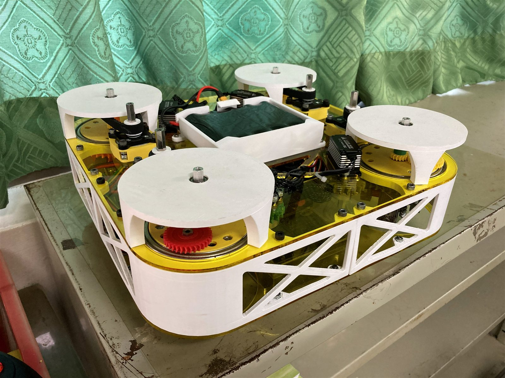

快速開始
第一次上車？照這四步走就對了。
硬體架構
底盤硬體組成、實測規格與 Driver Station 命名對照。
hardwareMap 命名表
| 類型 | 前左 FL | 前右 FR | 後左 BL | 後右 BR |
|---|---|---|---|---|
| 驅動馬達 (DcMotorEx) | FL | FR | BL | BR |
| 轉向伺服 (CRServo) | FLTurn | FRTurn | BLTurn | BRTurn |
| 絕對編碼器 (AnalogInput) | FLEncoder | FREncoder | BLEncoder | BREncoder |
| IMU | imu | — | — | — |
專案檔案結構
teamcode 下的主要檔案與 Tuning 程式群組。
Constants.java 參數說明
所有核心參數集中管理，分成三大群組。
ModuleConstants（單輪參數）
| 參數 | 說明 | 預設值 |
|---|---|---|
kWheelDiameterMeters | 輪子直徑（公尺） | 0.058 |
kDriveMotorGearRatio | 驅動馬達齒輪比 | 0.113636 |
kServoTurnsPerWheelTurn | Servo 轉幾圈對應輪子轉 1 圈 | 2.5 |
kPTurning | 轉向 PID — P 係數 | 0.5 |
kITurning | 轉向 PID — I 係數 | 0.02 |
kDTurning | 轉向 PID — D 係數 | 0.00 |
kTurningDeadbandDeg | 轉向死區（度） | 0.0 |
kPDrive / kIDrive / kDDrive / kFDrive | 驅動 PID 各係數 | 全 0.0 |
kEnableDrivePID | 是否啟用驅動 PID | false |
DriveConstants（整車參數）
| 參數 | 說明 | 預設值 |
|---|---|---|
kTrackWidth | 左右輪距（公尺） | 0.22 |
kWheelBase | 前後輪距（公尺） | 0.22 |
kPhysicalMaxSpeedMetersPerSecond | 實測最大線速度 | 0.764 |
kPhysicalMaxAngularSpeedRadiansPerSecond | 實測最大角速度 | 10.879 |
kFrontLeftDrivePowerScale 等 | 各輪功率補償 | 全 1.00 |
kImuLogoFacingDirection | Control Hub Logo 朝向 | UP |
kImuUsbFacingDirection | Control Hub USB 朝向 | BACKWARD |
USING_PINPOINT | 切換 GoBILDA Pinpoint 定位 | false |
AutoConstants（自動 PID 參數）
0.0，需透過 AutoPIDTuner 調整後填入。TuningConfig 即時調參
Dashboard 可編輯的 @Config 參數列表。
TuningConfig 可即時修改，無需重新部署。| 參數 | 說明 |
|---|---|
_1a/b/c_turningP/I/D | 轉向 PID 係數 |
_1d_turningOutputScale | 轉向輸出縮放 |
_2a_deadbandDeg | 轉向死區（度） |
_3a/b/c/d_driveP/I/D/F | 驅動 PID 各係數 |
_3e_driveOutputScale | 驅動輸出縮放 |
_4a_enableDrivePID | 啟用 / 停用驅動 PID |
_5a_teleDriveMaxAccel | TeleOp 最大線性加速度 |
_5b_teleDriveMaxAngularAccel | TeleOp 最大角加速度 |
Constants.java。Tuning 程式流程
從硬體驗證到 PID 調整，必須按順序執行。
| 流程 | 程式 | 目的 |
|---|---|---|
| 1a | Encoder Offset Reader | 確認編碼器讀值與接線正常 |
| 1b | Turning Encoder Reverse | 確認轉向正功率方向 |
| 1c | Auto Set Offset / Clear Swerve Prefs | 寫入或清除 Offset 與追蹤記憶 |
| 2 | Drive Motor Direction Tester | 確認驅動馬達方向設定 |
| 3 | Max Speed & Angular Test | 取得整車最大線速度與角速度 |
| 4 | Turning PID Tuner | 調整轉向 PID |
| 5 | Drive PID Tuner | 調整驅動速度控制 |
目的：監看絕對編碼器三層數值，確認硬體接線正常
操作：開啟程式（不需按 Start），手動轉動輪子觀察數值
| 層次 | 說明 |
|---|---|
| 第 1 層 Raw | 編碼器電壓換算成 0–360°，無任何處理 |
| 第 2 層 Geared | Raw × 齒輪比，輪子實際轉角（未扣 Offset） |
| 第 3 層 Final | 扣掉 Offset 後，SwerveModule 實際使用的值 |
目的：確認 CRServo 正功率時編碼器角度是否增加
操作：按 Start → 按 A 發送 Pulse（300 ms），觀察角度變化
| 結果 | 設定 |
|---|---|
| 角度增加 ↑ | kXXXTurningEncoderReversed = false |
| 角度減少 ↓ | kXXXTurningEncoderReversed = true |
按鍵：A 發送 Pulse ｜ LB/RB 調整功率 ±10%
目的：手動對齊輪子朝前後，一鍵寫入 Offset
- 手動將四個輪子全部轉到朝向正前方
- 按 Start → 觀察第 3 層 Final 是否接近 0°
- 全部 < ±5° 後按 A 寫入
A 會同時清除累積角追蹤記憶，並覆蓋既有 Offset。目的：清除 Control Hub 所有持久化角度與 Offset 記錄
使用時機：角度追蹤嚴重跑掉、換裝零件、記憶被汙染
操作：按 Start 即立即清除，再重新執行 Auto Set Offset
目的：確認四顆驅動馬達前進時 Encoder 數值增加
Init 階段：程式自動對齊四輪到 0°，等待「✅ 全部對齊」後按 Start
| Encoder 變化 | 結論 |
|---|---|
| 數值增加（↑） | kXXXDriveEncoderReversed = false |
| 數值減少（↓） | kXXXDriveEncoderReversed = true |
| 按鍵 | 功能 |
|---|---|
A | 全部前進 |
B | 全部後退 |
DPAD ↑ → ← ↓ | FL / FR / BL / BR 單獨 |
LB / RB | 調整功率 ±10% |
Y | 套用結論到本次執行期 |
目的：實測最大線速度與角速度，填入 Constants.java
public static final double kPhysicalMaxSpeedMetersPerSecond = [實測值];
public static final double kPhysicalMaxAngularSpeedRadiansPerSecond = [實測值];目的：調整轉向 CRServo PID，使輪角快速穩定跟上正弦波目標
- 連接 Dashboard，按 Start
- 在 Graph 觀察
target_deg與各輪角度曲線 - 在 Config →
_4_TurningPIDTuner即時調整
建議順序：先調 P（0.3 起）→ 加 D 減震盪 → 有穩態誤差才加 I
| 參數 | 說明 |
|---|---|
_1a/b/c_turningP/I/D | PID 係數 |
_1d_outputScale | 輸出縮放（通常 1.0） |
_1e_deadbandDeg | 死區（建議 0） |
_2a_testPeriodSec | 正弦波週期（秒） |
_2b_testAmplitudeDeg | 正弦波振幅（度） |
Constants.java 的 kPTurning / kITurning / kDTurning。目的：調整驅動馬達速度控制，使實際速度跟上方波目標
Init 選擇：A = 全部，DPAD ↑→←↓ = FL/FR/BL/BR 單獨
1. fOnlyMode = true，調 manualF 讓速度大致正確
2. 需精準控制時關閉 fOnlyMode，依序加 F → P → D → I
3. 始終震盪則維持 F-Only，保持 kEnableDrivePID = false| 按鍵 | 功能 |
|---|---|
X | 暫停 / 繼續 |
LB / RB | 調整測試最大速度 ±0.05 m/s |
正式操作：Swerve_Control
比賽主程式，支援三種控制模式與搖桿調整。
控制模式
搖桿配置
Dashboard 監看資訊
| 欄位 | 說明 |
|---|---|
Mode | 控制模式 |
Heading | 當前航向（度） |
Position X/Y | 里程計估計位置（公尺） |
Drive RPM | 各輪 RPM |
Turning Angle | 各輪轉向角（度） |
Accum Wheel Angle | 各輪累積角（驗證追蹤連續性） |
Speed / Turning | 目前速度 / 轉動倍率 |
Auto PID Tuner
調整自動模式 X / Y / Theta 位置 PID，使機器人被推離後能自動回正。
| 模式值 | 說明 |
|---|---|
0 | 只測 X 軸（前後） |
1 | 只測 Y 軸（左右） |
2 | 只測 Theta（旋轉） |
3 | 三軸全部 |
按 Start → 用手推機器人觀察回正效果 → Dashboard 即時調整 → 填入 Constants.java 的 AutoConstants。
FTC Dashboard
瀏覽器即時監看 Graph / Config / Field / Telemetry。
| 頁籤 | 說明 |
|---|---|
| Graph | 即時折線圖（packet.put() 的數值） |
| Config | 即時調整 @Config 標注的 public static 參數 |
| Field | 場地俯視圖（藍色 = 當前，綠色 = 目標） |
| Telemetry | Driver Station telemetry 內容 |
角度追蹤系統原理
為何需要自己算、以及四層保護機制。
為什麼不能直接用絕對編碼器？
Servo 每轉一圈編碼器歸零，但輪子每轉一圈需要 Servo 轉 2.5 圈。同一個編碼器讀數對應三個不同輪子位置（0°、144°、288°），無法唯一定位。
Delta 累積追蹤
// 每個迴圈：
delta = 當前 Servo 角度 - 上次 Servo 角度（處理跨 0 邊界）
accumulatedAngle += delta × 齒輪比（0.4）四大保護機制
IMU 航向追蹤
// zeroHeading() 記錄基準值
headingOffset = raw;
// getHeading() 回傳差值
return raw - headingOffset;常見問題排查
點擊問題展開答案。
1c. ClearSwervePrefs 清除記憶，再重新執行 1c. Auto Set Offset。原因 A：某顆馬達轉速不足 → 調整 kXXXDrivePowerScale（> 1.0 加大補償）。
原因 B：Physical Max 常數測量功率不一致 → 用相同功率（100%）重測兩個值。
SwerveSubsystem.java 中有負號：
public Rotation2d getRotation2d() {
return Rotation2d.fromDegrees(-getHeading()); // 必須有負號
}() -> -driverGamepad.getLeftY() * speedMultiplierLambda 自動捕捉外部成員變數，不需重建 joystickCmd。
USING_PINPOINT = true）。1c. ClearSwervePrefs，或重新執行 1c. Auto Set Offset。_1a_turningP（在 TuningConfig 即時調整）；確認 STILL_THRESHOLD_MS = 500 未被設太短。待辦與已知限制
已知問題與計畫中的改善方向。
| 問題 | 當前狀態 | 計畫 |
|---|---|---|
| FL 馬達比其他慢約 20% | 暫時補償 kFrontLeftDrivePowerScale | 比賽後拆機確認機構問題 |
| IMU 長時間漂移 | 已緩解 20 ms 快取 | 啟用 GoBILDA Pinpoint |
| 2.5 圈絕對定位限制 | 已繞過 Delta 追蹤 + 持久化 | 換多圈絕對編碼器 |
| 電壓降幅偏大 | 未解決 | 確認電池老化或接頭接觸不良 |
| Auto PID 未調整 | 待調整 全設為 0.0 | 使用 AutoPIDTuner 調整後填入 |